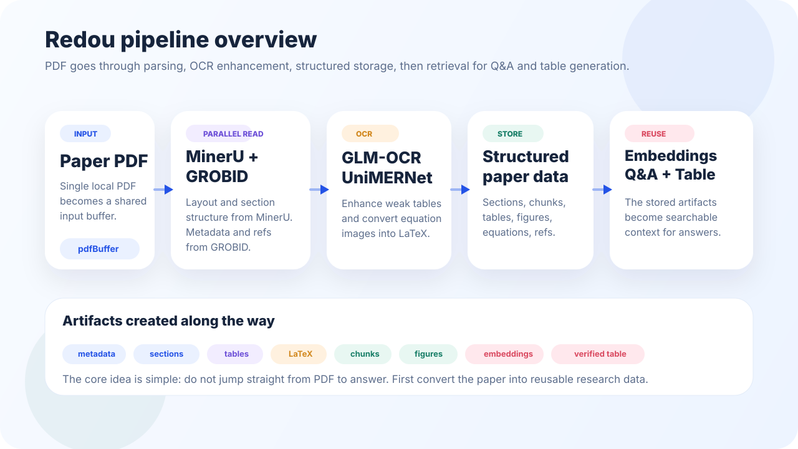
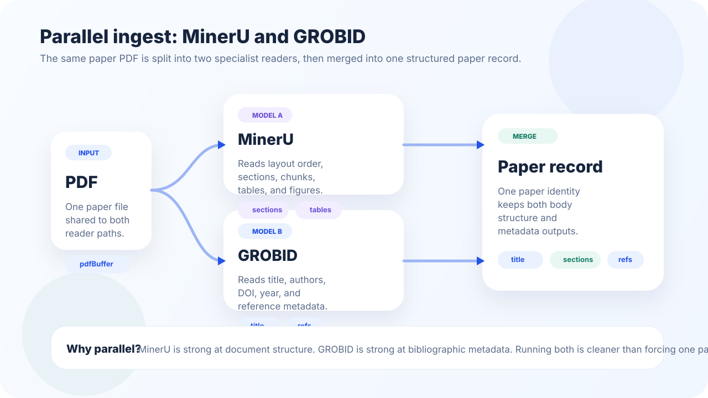
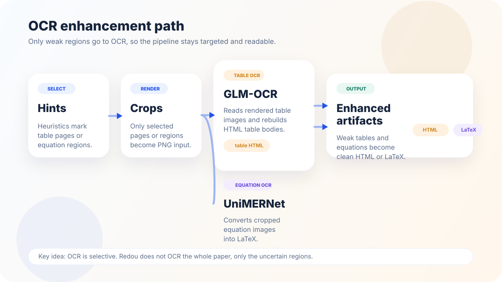
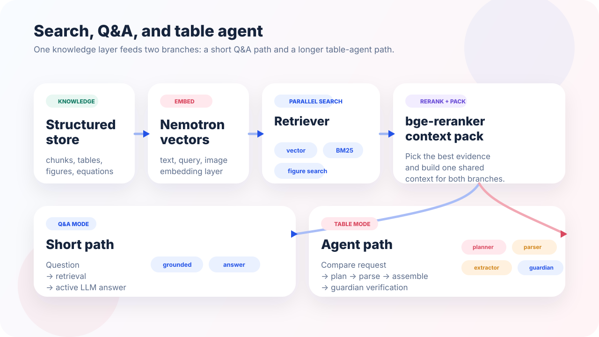

Metadata
Title, authors, DOI, year, and references need bibliographic parsing.
This talk is not about a single chatbot. It is about a pipeline: parse the paper, repair weak parts with OCR, store clean artifacts, then reuse them for Q&A and table generation.
Local research PDF
Specialist models split the work
OCR fixes tables and equations
Search, Q&A, and table agent

A paper PDF mixes metadata, layout, tables, figures, equations, and references. Each part fails in a different way, so the system is easier to explain as a team of specialists.
Title, authors, DOI, year, and references need bibliographic parsing.
Two-column papers break simple text reading order.
Tables and equations often behave like images, not clean text.
Later the system must find the right evidence for a new question.
Redou separates the pipeline into parsing, OCR, storage, retrieval, and response generation.
Start here in the presentation: show the whole map first, then zoom into each stage.
Read the PDF with specialist parsers.
Repair weak tables and equations with OCR.
Store the results so later modules can search and reuse them.
The same PDF is processed by two different readers in parallel, because they are strong at different jobs.

Extracts body structure, sections, chunks, tables, and figures.
Extracts metadata, bibliographic signals, and references.
Both outputs become one paper record for the next stage.
Redou does not OCR the whole paper. It sends only suspicious regions to OCR so the pipeline stays fast and targeted.

Heuristics tell the OCR stage which pages or crops need help.
Reconstructs table HTML from rendered table images.
Converts equation images into LaTeX.
After parsing and OCR, the paper is no longer just a document. It becomes a set of rows and artifacts that later modules can query.
title, authors, DOI, year, abstract, journal
sections and chunks become the main search units
tables, figures, equations keep OCR outputs and image links
reference rows help trace paper identity and citations
Every next step reads from these stored artifacts instead of reopening the raw PDF from scratch.
Once the paper is stored, Redou builds a searchable knowledge layer so the user can ask vague questions later.

chunks, tables, figures, equations
Nemotron vectors for text, query, image
vector, BM25, and figure search run in parallel
bge-reranker-base builds the final evidence context
Q&A reuses the retrieval layer, then sends the packed context to the active LLM for an evidence-based answer.
The user asks a natural language question.
Parallel retrieval gathers the best chunks, tables, and figures.
The active LLM returns a grounded answer.
Q&A is a reuse path: it does not re-parse the PDF, it reuses the stored knowledge layer.
Table mode is the most agentic part of Redou. Planning, retrieval, parsing, assembly, and verification all appear in one path.
Compare request
Orchestrator defines queries and columns
Extractor and parser read the evidence
Table agent builds the table JSON
Guardian checks groundedness before final output
Table mode is not one model call. It is a coordinated multi-step agent pipeline.
If you explain Redou as “PDF in, answer out,” the logic disappears. If you explain the middle artifacts, the whole design becomes easy to follow.
One local paper PDF enters the system.
MinerU and GROBID split the parsing work.
GLM-OCR and UniMERNet fix weak tables and equations.
The paper becomes reusable structured artifacts.
The retrieval layer feeds Q&A and the table agent.
Redou does not jump from PDF to answer. It first builds research data, then reuses that data through search and agent branches.